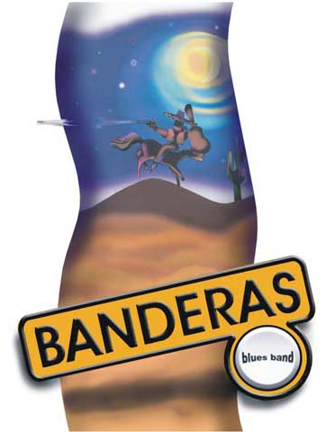

Год образования: 1998. в городе Киеве
Дискография:
Альбом "Blues News from Kiev" 2001
Альбом "Live in Kharkov" 2005
Музыка Bandera's Blues Band (B.B.B.) - это горячая смесь блюза, латины и рока.
В его составе играют настоящие виртуозы:
Все эти люди прошли большой интересный творческий путь, прежде чем выйти на сцену в этом составе.
На концертах Bandera's Blues Band, Вы вначале ощущаете какую-то легкость и непринужденность, испытывая при этом истинное наслаждение от виртуозности игры музыкантов, потом вы слышите красивый, добрый, бархатный тенор вокалиста группы Владимира Бандераса и Вас буквально завораживает. Вы как будто попадаете в другой мир. Это мир музыки и любви, которая льется со сцены, наполняя радостью Ваше сердце.
Но Bandera's Blues Band это не райское пение, а скорее крик души на фоне бешеного ритма блюзовой гитары Романа Абашадзе. Поэтому кто танцует, кто смеется, а кто и плачет не в силах сдержать нахлынувшие чувства.
В программе, помимо каверов, можно услышать и авторские песни, люди их знают и с удовольствием подпевают. Bandera's Blues Band - это по-настоящему живой, хорошо сыгранный коллектив. Все альбомы были записаны непосредственно во время выступления коллектива на сцене перед публикой. В музыке доминирует блюз-роковое направление. Много ярких, танцевальных хитов.
Так же, мы с радостью хотим Вам представить нашу новую авторскую программу с яркими, танцевальными, запоминающимися песнями на разных языках.
Контакты: